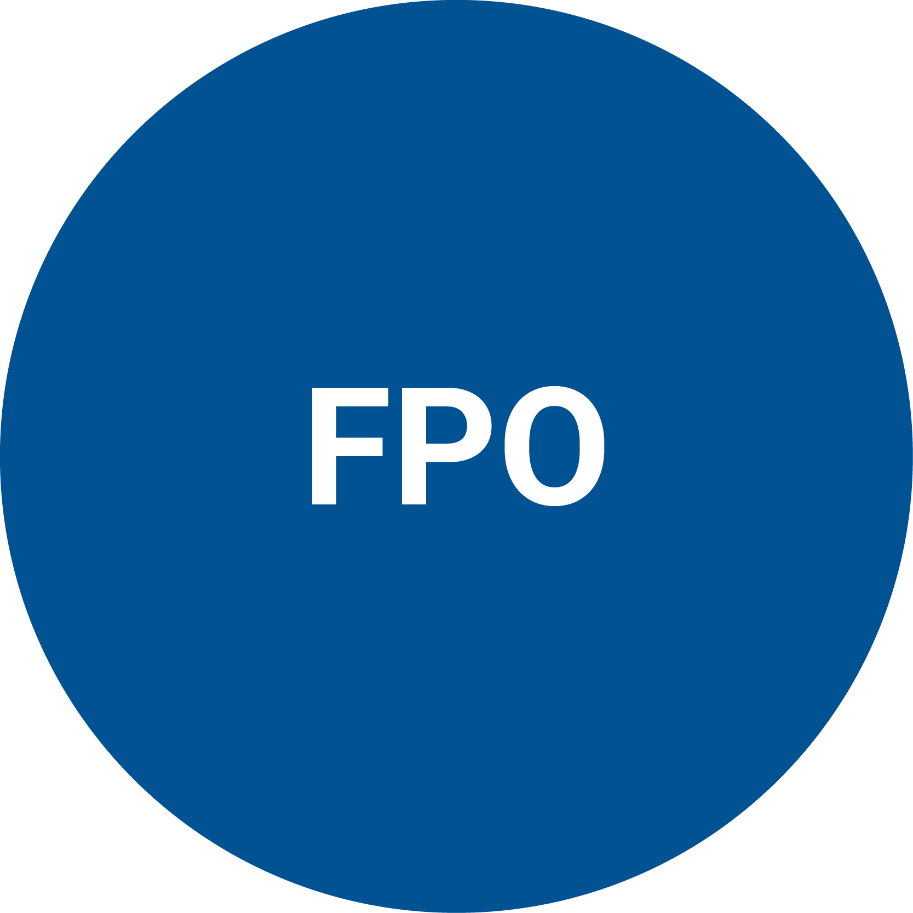
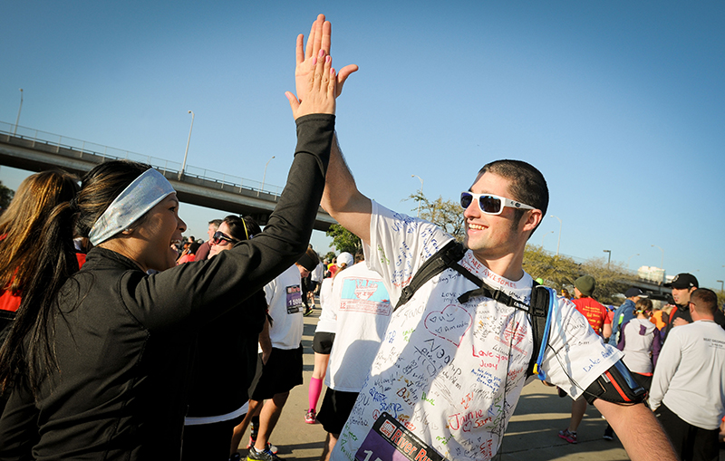
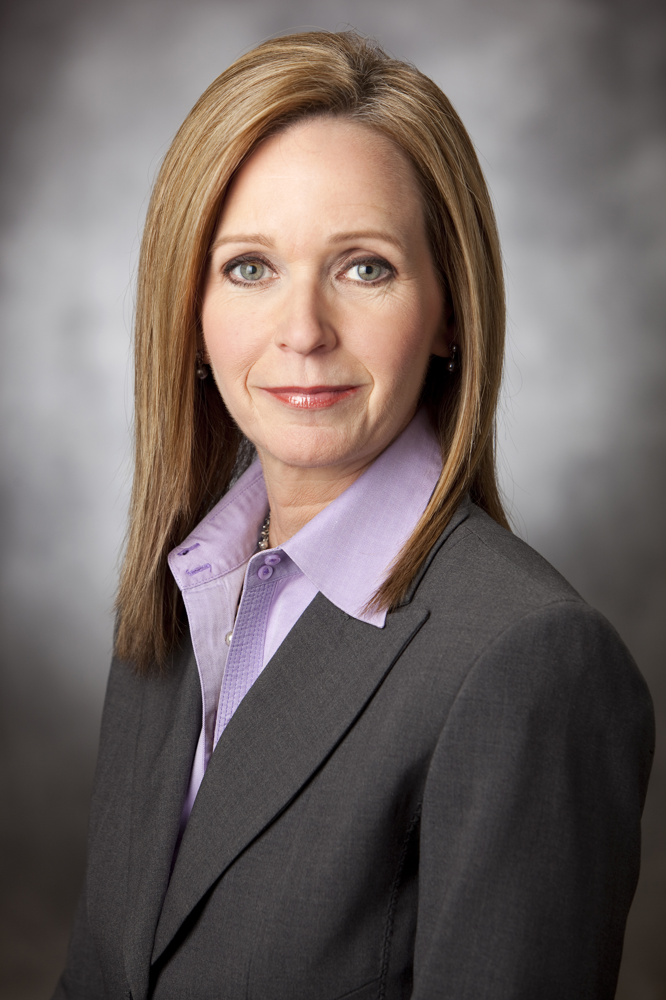
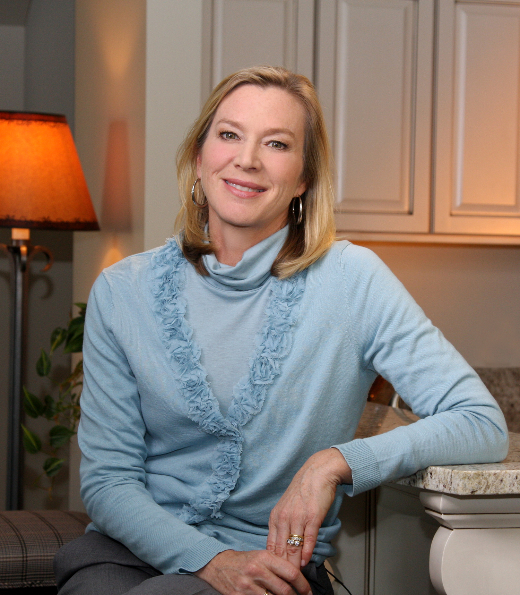

The first few hours, days and weeks following a brain injury are a difficult time. Getting over the shock of the initial injury and learning everything you need to know about what will come next can sometimes be overwhelming. This video, developed by Shepherd Center, uses simple language and images of real people who have sustained a brain injury, as well as medical experts and advocates.

Every 9 seconds, someone in the United States sustains a brain injury.
Acquired brain injury (ABI) is any injury to the brain that is not hereditary, congenital, degenerative, or induced by birth trauma.
More than 3.5 million children and adults sustain an ABI each year, but the total incidence is unknown.
Traumatic brain injury (TBI) is type of ABI. A TBI is caused by trauma to the brain from an external force.
The number of people who sustain TBIs and do not seek treatment is unknown.
Introducing a new video series available to trauma centers to help educate patients and families about their new injury and options for post-trauma care.
Click here to learn more
When Austin Vestal ran across the finish line at the Gate River Run 15K in Jacksonville, Fla., in March 2013, it was nothing short of a miracle.

It was like any other weekday morning for Amanda Francis, a first grade teacher living in Gaffney, S.C. She woke up and quickly jumped in the shower to get ready for work. But from there, things took a turn for the worse.

Occupational therapist Karla Knuth works with patient Josh Griffin on cooking skills in Shepherd Center's Acquired Brain Injury Unit.

Narrated by Judy Fortin, former CNN anchor and medical correspondent. Special introduction by Lee Woodruff, wife of ABC News reporter Bob Woodruff who sustained a traumatic brain injury while reporting on the war in Iraq.

Produced by Shepherd Center and KPKinteractive in collaboration with the American Trauma Society, the Brain Injury Association of America, National Spinal Cord Injury Association and the Christopher & Dana Reeve Foundation
Shepherd Center, located in Atlanta, Georgia, is a private, not-for-profit hospital specializing in medical treatment, research and rehabilitation for people with spinal cord injury and brain injury.
KPK is an award-winning boutique branding and communication group, founded in 2000 by well-known Atlanta communication leader Karin Pendley Koser.